13. [Cours]: Een database op het web beschikbaar maken met Spring MVC
Trefwoorden: meerlaagse architectuur, Spring, afhankelijkheidsinjectie, webservice / jSON, client / server
13.1. Support
 |  |
De projecten van dit hoofdstuk zijn te vinden in de map [support / chap-13]. Met het script SQL [dbintrospringdata.sql] kunt u de basis MySQL aanmaken die nodig is voor de tests.
13.2. De rol van Spring MVC in een webapplicatie
Laten we Spring MVC in de context van de ontwikkeling van een webapplicatie plaatsen. Meestal wordt deze gebouwd op basis van een meerlaagse architectuur, zoals de volgende:
 |
- de [Web]-laag is de laag die in contact staat met de gebruiker van de webapplicatie. De gebruiker communiceert met de webapplicatie via webpagina’s die in een browser worden weergegeven. Spring MVC bevindt zich in deze laag en uitsluitend in deze laag;
- de laag [métier] implementeert de bedrijfsregels van de applicatie, zoals de berekening van een salaris of een factuur. Deze laag maakt gebruik van gegevens die afkomstig zijn van de gebruiker via de laag [Web] en van de laag SGBD via de laag [DAO];
- de laag [DAO] (Data Access Objects), de laag [ORM] (Object Relational Mapper) en de driver JDBC beheren de toegang tot de gegevens van de SGBD. De laag [ORM] vormt een brug tussen de objecten die door de laag [DAO] worden beheerd en de rijen en kolommen van de tabellen in een relationele database. De specificatie JPA (Java Persistence API) maakt het mogelijk om abstractie te maken van de gebruikte ORM, mits deze de specificaties implementeert. Dat is hier het geval en we zullen de ORM-laag voortaan de JPA-laag noemen;
- de integratie van de lagen wordt verzorgd door het Spring-framework;
13.3. Het ontwikkelingsmodel van Spring MVC
Spring MVC implementeert het zogenaamde MVC-architectuurmodel (Model – View – Controller) op de volgende manier:
 |
De verwerking van een verzoek van een klant verloopt als volgt:
- verzoek – de aangevraagde URL hebben de vorm http://machine:port/contexte/Action/param1/param2/....?p1=v1&p2=v2&... De [Front Controller] gebruikt een configuratiebestand of Java-annotaties om het verzoek naar de juiste controller en de juiste actie binnen die controller te „routeren“. Hiervoor gebruikt hij het veld [Action] van de URL. De rest van de URL [/param1/param2/...] bestaat uit optionele parameters die aan de actie worden doorgegeven. De C van MVC is hier de tekenreeks [Front Controller, Contrôleur, Action]. Als geen enkele controller de gevraagde actie kan verwerken, zal de webserver antwoorden dat de gevraagde URL niet is gevonden.
- verwerking
- De gekozen actie kan gebruikmaken van de parameters parami die de [Front Controller] aan haar heeft doorgegeven. Deze kunnen uit verschillende bronnen afkomstig zijn:
- het pad [/param1/param2/...] van de URL,
- de parameters [p1=v1&p2=v2] van de URL,
- van parameters die door de browser bij het verzoek zijn meegestuurd;
- bij de verwerking van het verzoek van de gebruiker kan de actie de lagen [métier] en [2b] nodig hebben. Zodra het verzoek van de klant is verwerkt, kan dit verschillende reacties oproepen. Een klassiek voorbeeld is:
- een foutpagina als het verzoek niet correct kon worden verwerkt
- een bevestigingspagina in het andere geval
- de actie vraagt om een bepaalde weergave [3] weer te geven. Deze weergave toont gegevens die het model van de weergave worden genoemd. Dit is de M van MVC. De actie zal dit model M [2c] aanmaken en vragen om een weergave V weer te geven [3];
- antwoord – de gekozen weergave V gebruikt het door de actie opgebouwde model M om de dynamische delen van het antwoord HTML te initialiseren dat zij naar de client moet verzenden, en verstuurt vervolgens dit antwoord.
Voor een webservice / jSON is de voorgaande architectuur enigszins aangepast:
 |
- in [4a] wordt het model, dat een Java-klasse is, door een bibliotheek jSON omgezet in de tekenreeks jSON;
- in [4b] wordt deze tekenreeks jSON naar de browser verzonden;
Laten we nu eens nader ingaan op het verband tussen de webarchitectuur MVC en de gelaagde architectuur. Afhankelijk van de definitie die men aan het model geeft, zijn deze twee concepten al dan niet met elkaar verbonden. Laten we een eengelaagde Spring-webapplicatie MVC als voorbeeld nemen:
 |
Als we de laag [Web] implementeren met Spring MVC, hebben we weliswaar een webarchitectuur MVC, maar geen meerlaagse architectuur. Hier zorgt de laag [web] voor alles: presentatie, bedrijfslogica, toegang tot gegevens. Dit werk wordt uitgevoerd door de acties.
Laten we nu eens kijken naar een meerlaagse webarchitectuur:
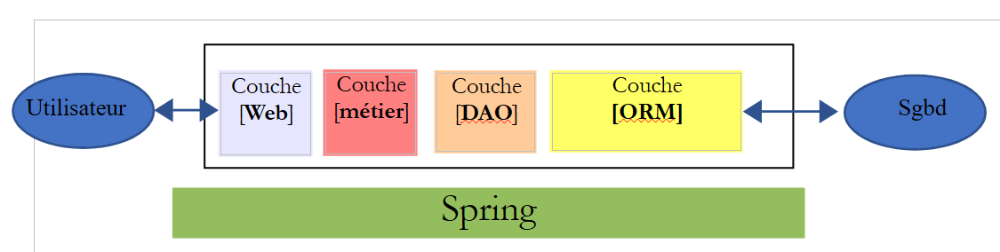 |
De laag [Web] kan worden geïmplementeerd zonder framework en zonder het model MVC te volgen. We hebben dan wel een meerlaagse architectuur, maar de weblaag implementeert het model MVC niet.
Bijvoorbeeld: in de .NET-omgeving kan de hierboven genoemde [Web]-laagbovenstaande laag worden geïmplementeerd met ASP.NET en MVC, waardoor we een gelaagde architectuur krijgen met een [Web]-laag van het type MVC. Zodra dit is gebeurd, kan deze laag ASP.NET MVC worden vervangen door een klassieke laag ASP.NET (WebForms), terwijl de rest (bedrijfslaag, DAO, ORM) ongewijzigd. We hebben dan een gelaagde architectuur met een laag [Web] die niet langer van het type MVC is.
In MVC hebben we aangegeven dat het model M dat van de weergave V is, c.a.d. De verzameling gegevens die door de weergave V wordt weergegeven. Er wordt een andere definitie van het model M van MVC gegeven:
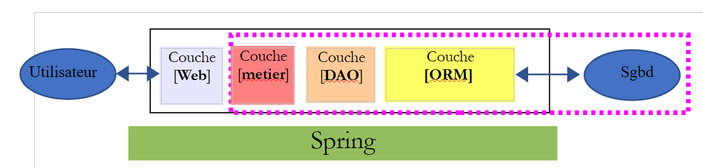 |
Veel auteurs zijn van mening dat wat zich rechts van de laag [Web] bevindt, het model M van MVC vormt. Om dubbelzinnigheden te voorkomen, kan men spreken van:
- het domeinmodel wanneer men alles bedoelt wat zich rechts van de laag [Web] bevindt
- het model van de weergave wanneer we verwijzen naar de gegevens die door een weergave V worden getoond
In het vervolg zal de term "M-model" uitsluitend verwijzen naar het model van een weergave V.
13.4. Een webproject / jSON met Spring MVC
De website [http://spring.io/guides] biedt starttutorials om het Spring-ecosysteem te ontdekken. We volgen er een om de Maven-configuratie te ontdekken die nodig is voor een Spring-project MVC.
13.4.1. Het demonstratieproject
 |
- in [1] importeren we een van de Spring-handleidingen;
 |
- in [2] kiezen we het voorbeeld [Rest Service];
- in [3] kiezen we het Maven-project;
- in [4] kiezen we de definitieve versie van de handleiding;
- in [5], valideren we;
- in [6]: het geïmporteerde project;
Webservices die via standaard URL toegankelijk zijn en jSON-tekst leveren, worden vaak REST-services (REpresentational State Transfer) genoemd. Een service wordt als RESTful beschouwd als deze aan bepaalde regels voldoet.
Laten we nu het geïmporteerde project bekijken, te beginnen met de Maven-configuratie.
13.4.2. Maven-configuratie
Het bestand [pom.xml] ziet er als volgt uit:
<?xml version="1.0" encoding="UTF-8"?>
<project xmlns="http://maven.apache.org/POM/4.0.0" xmlns:xsi="http://www.w3.org/2001/XMLSchema-instance"
xsi:schemaLocation="http://maven.apache.org/POM/4.0.0 http://maven.apache.org/xsd/maven-4.0.0.xsd">
<modelVersion>4.0.0</modelVersion>
<groupId>org.springframework</groupId>
<artifactId>gs-rest-service</artifactId>
<version>0.1.0</version>
<parent>
<groupId>org.springframework.boot</groupId>
<artifactId>spring-boot-starter-parent</artifactId>
<version>1.2.2.RELEASE</version>
</parent>
<dependencies>
<dependency>
<groupId>org.springframework.boot</groupId>
<artifactId>spring-boot-starter-web</artifactId>
</dependency>
</dependencies>
<properties>
<start-class>hello.Application</start-class>
</properties>
<build>
<plugins>
<plugin>
<groupId>org.springframework.boot</groupId>
<artifactId>spring-boot-maven-plugin</artifactId>
</plugin>
</plugins>
</build>
<repositories>
<repository>
<id>spring-releases</id>
<url>https://repo.spring.io/libs-release</url>
</repository>
</repositories>
<pluginRepositories>
<pluginRepository>
<id>spring-releases</id>
<url>https://repo.spring.io/libs-release</url>
</pluginRepository>
</pluginRepositories>
</project>
- regels 6-8: de eigenschappen van het Maven-project. Er ontbreekt een tag [<packaging>] die het type aangeeft van het bestand dat door de Maven-compilatie wordt geproduceerd. Bij gebrek hieraan wordt het type [jar] gebruikt. De applicatie is dus een uitvoerbaar consoleprogramma, en geen webapplicatie, waarvoor de packaging dan [war] zou zijn;
- regels 10-14: het Maven-project heeft een bovenliggend project met de naam [spring-boot-starter-parent]. Dit project definieert het grootste deel van de afhankelijkheden van het project. Deze kunnen voldoende zijn, in welk geval er geen extra afhankelijkheden worden toegevoegd, of onvoldoende, in welk geval de ontbrekende afhankelijkheden worden toegevoegd;
- regels 17-20: het artefact [spring-boot-starter-web] bevat de bibliotheken die nodig zijn voor een Spring-project MVC van het type webservice, waarbij geen weergaven worden gegenereerd. Dit artefact bevat een zeer groot aantal bibliotheken, waaronder die van een ingebouwde Tomcat-server. Op deze server wordt de applicatie uitgevoerd;
De bibliotheken die bij deze configuratie worden meegeleverd, zijn zeer talrijk:
 |  |
Hierboven ziet u de drie archiefbestanden van de Tomcat-server.
13.4.3. De architectuur van een Spring-service [web / jSON]
Voor een webservice / jSON implementeert Spring MVC het model MVC als volgt:
 |
- in [4a] wordt het model, dat een Java-klasse is, door een bibliotheek jSON omgezet in de tekenreeks jSON;
- in [4b] wordt deze tekenreeks jSON naar de browser verzonden;
13.4.4. De C-controller
 |
De geïmporteerde applicatie heeft de volgende controller:
package hello;
import java.util.concurrent.atomic.AtomicLong;
import org.springframework.web.bind.annotation.RequestMapping;
import org.springframework.web.bind.annotation.RequestParam;
import org.springframework.web.bind.annotation.RestController;
@RestController
public class GreetingController {
private static final String template = "Hello, %s!";
private final AtomicLong counter = new AtomicLong();
@RequestMapping("/greeting")
public Greeting greeting(@RequestParam(value = "name", defaultValue = "World") String name) {
return new Greeting(counter.incrementAndGet(), String.format(template, name));
}
}
- regel 9: de annotatie [@RestController] maakt van de klasse [GreetingController] een Spring-controller, d.w.z. dat de methoden ervan worden geregistreerd om URL te verwerken. We hebben de vergelijkbare annotatie [@Controller] al gezien. Het resultaat van de methoden van die controller was een type [String], wat de naam was van de weer te geven weergave. Hier is het anders. De methoden van een controller van het type [@RestController] retourneren objecten die worden geserialiseerd om naar de browser te worden verzonden. Het type serialisatie dat wordt toegepast, hangt af van de configuratie van Spring MVC. Hier worden ze geserialiseerd naar jSON. Het is de aanwezigheid van een bibliotheek jSON in de afhankelijkheden van het project die ervoor zorgt dat Spring Boot het project via autoconfiguratie op deze manier instelt;
- regel 14: de annotatie [@RequestMapping] geeft aan welk URL door de methode wordt verwerkt, in dit geval het URL [/greeting];
- regel 15: we hebben de annotatie [@RequestParam] al uitgelegd. Het resultaat dat door de methode wordt geretourneerd, is een object van het type [Greeting].
- regel 12: een long integer van het type ‘atomic’. Dit betekent dat het gelijktijdige toegang ondersteunt. Meerdere threads kunnen tegelijkertijd de variabele [counter] willen verhogen. Dit verloopt op een veilige manier. Een thread kan de waarde van de teller pas lezen als de thread die deze aan het wijzigen is, zijn wijziging heeft voltooid.
13.4.5. Het M-model
Het M-model dat door de vorige methode wordt gegenereerd, is het volgende object [Greeting]:
 |
package hello;
public class Greeting {
private final long id;
private final String content;
public Greeting(long id, String content) {
this.id = id;
this.content = content;
}
public long getId() {
return id;
}
public String getContent() {
return content;
}
}
De transformatie jSON van dit object zal de tekenreeks {"id":n,"content":"tekst"} genereren. Uiteindelijk zal de tekenreeks jSON die door de methode van de controller wordt gegenereerd, de volgende vorm hebben:
of
13.4.6. Uitvoering
 |
De klasse [Application.java] is de uitvoerbare klasse van het project. De code ervan is als volgt:
package hello;
import org.springframework.boot.autoconfigure.EnableAutoConfiguration;
import org.springframework.boot.SpringApplication;
import org.springframework.context.annotation.ComponentScan;
@ComponentScan
@EnableAutoConfiguration
public class Application {
public static void main(String[] args) {
SpringApplication.run(Application.class, args);
}
}
We zijn deze code al tegengekomen en hebben deze uitgelegd in het vorige voorbeeld.
13.4.7. Het project uitvoeren
Laten we het project uitvoeren:
 |
We krijgen de volgende console-logs:
- regel 13: de Tomcat-server start op poort 8080 (regel 12);
- regel 17: de servlet [DispatcherServlet] is aanwezig;
- regel 20: de methode [GreetingController.greeting] is gedetecteerd;
Om de webapplicatie te testen, roepen we de URL [http://localhost:8080/greeting] op:
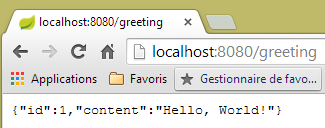 |  |
We ontvangen inderdaad de verwachte tekenreeks jSON. Het kan interessant zijn om de door de server verzonden headers HTTP te bekijken. Hiervoor gebruiken we de Chrome-extensie met de naam [Advanced Rest Client] (Chrome / Ctrl-T / Menu [Applications] / [Advanced Rest Client] – zie bijlagen, paragraaf 22.5):
 |
- in [1], de gevraagde URL;
- in [2] wordt de methode GET gebruikt;
- in [3], het antwoord jSON;
- in [4] heeft de server aangegeven dat hij een antwoord in het formaat jSON verstuurde;
- in [5] wordt hetzelfde URL opgevraagd, maar ditmaal met een POST;
- in [7] wordt de informatie in de vorm [urlencoded] naar de server verzonden;
- in [6], de parameter name met zijn waarde;
- in [8] geeft de browser aan de server door dat hij informatie [urlencoded] verstuurt;
- in [9], het antwoord jSON van de server;
13.4.8. Een uitvoerbaar archief maken
We maken nu een uitvoerbaar archief:
 |
 |
- in [1]: we voeren een Maven-doel uit;
- in [2]: er zijn twee doelen (goals): [clean] om de map [target] uit het Maven-project te verwijderen, [package] om deze opnieuw te genereren;
- in [3]: de gegenereerde map [target] wordt in deze map geplaatst;
- in [4]: het doel wordt gegenereerd;
In de logbestanden die in de console verschijnen, is het belangrijk dat de plug-in [spring-boot-maven-plugin] wordt weergegeven. Deze zorgt voor het genereren van het uitvoerbare archief.
Met een console gaan we naar de gegenereerde map:
D:\Temp\wksSTS\gs-rest-service\target>dir
...
11/06/2014 15:30 <DIR> classes
11/06/2014 15:30 <DIR> generated-sources
11/06/2014 15:30 11 073 572 gs-rest-service-0.1.0.jar
11/06/2014 15:30 3 690 gs-rest-service-0.1.0.jar.original
11/06/2014 15:30 <DIR> maven-archiver
11/06/2014 15:30 <DIR> maven-status
...
- regel 5: het gegenereerde archief;
Dit archief wordt als volgt uitgevoerd:
D:\Temp\wksSTS\gs-rest-service-complete\target>java -jar gs-rest-service-0.1.0.jar
. ____ _ __ _ _
/\\ / ___'_ __ _ _(_)_ __ __ _ \ \ \ \
( ( )\___ | '_ | '_| | '_ \/ _` | \ \ \ \
\\/ ___)| |_)| | | | | || (_| | ) ) ) )
' |____| .__|_| |_|_| |_\__, | / / / /
=========|_|==============|___/=/_/_/_/
:: Spring Boot :: (v1.1.0.RELEASE)
2014-06-11 15:32:47.088 INFO 4972 --- [ main] hello.Application
: Starting Application on Gportpers3 with PID 4972 (D:\Temp\wk
sSTS\gs-rest-service-complete\target\gs-rest-service-0.1.0.jar started by ST in
D:\Temp\wksSTS\gs-rest-service-complete\target)
...
Nu de webapplicatie is gestart, kun je deze openen met een browser:
 |
13.4.9. De applicatie op een Tomcat-server implementeren
Net als bij het vorige project passen we het bestand [pom.xml] als volgt aan:
<?xml version="1.0" encoding="UTF-8"?>
<project xmlns="http://maven.apache.org/POM/4.0.0" xmlns:xsi="http://www.w3.org/2001/XMLSchema-instance"
xsi:schemaLocation="http://maven.apache.org/POM/4.0.0 http://maven.apache.org/xsd/maven-4.0.0.xsd">
<modelVersion>4.0.0</modelVersion>
<groupId>org.springframework</groupId>
<artifactId>gs-rest-service</artifactId>
<version>0.1.0</version>
<packaging>war</packaging>
...
</project>
- regel 9: hier moet worden aangegeven dat er een WAR-archief (Web ARchive) wordt gegenereerd;
Daarnaast moet de webapplicatie worden geconfigureerd. Aangezien het bestand [web.xml] ontbreekt, gebeurt dit met een klasse die afstamt van [SpringBootServletInitializer]:
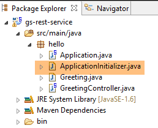 |
De klasse [ApplicationInitializer] ziet er als volgt uit:
package hello;
import org.springframework.boot.builder.SpringApplicationBuilder;
import org.springframework.boot.context.web.SpringBootServletInitializer;
public class ApplicationInitializer extends SpringBootServletInitializer {
@Override
protected SpringApplicationBuilder configure(SpringApplicationBuilder application) {
return application.sources(Application.class);
}
}
- regel 6: de klasse [ApplicationInitializer] is een uitbreiding van de klasse [SpringBootServletInitializer];
- regel 9: de methode [configure] wordt opnieuw gedefinieerd (regel 8);
- regel 10: hier wordt de klasse opgegeven die het project configureert;
Om het project uit te voeren, kunt u als volgt te werk gaan:
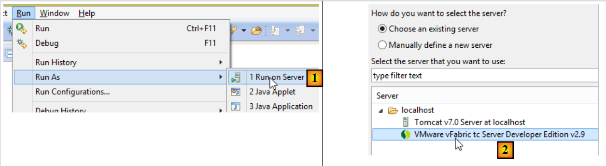 |
- in [1-2] voert u het project uit op een van de servers die zijn geregistreerd in IDE Eclipse;
Zodra dit is gebeurd, kun je de URL [http://localhost:8080/gs-rest-service/greeting/?name=Mitchell] in een browser opvragen:
 |
13.4.10. Conclusie
We hebben een type Spring-project geïntroduceerd waarbij de webapplicatie een stream naar de browser stuurt. We gaan nu een webapplicatie / jSON ontwikkelen om de database [dbintrospringdata], die in de tutorial [Introduction à Spring Data] is behandeld, op het web beschikbaar te maken.
13.5. De database [dbintrospringdata] op het web beschikbaar maken
13.5.1. Architectuur van de webservice / jSON
We gaan de volgende architectuur opzetten:
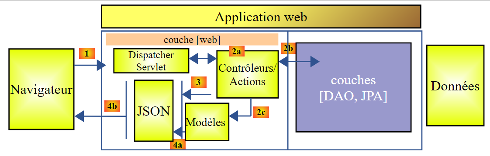 |
De lagen [DAO] en [JPA] worden geïmplementeerd door de applicatie die in de tutorial [Introduction à Spring Data] is geschreven.
13.5.2. Installatie van de database
 |
Met het script SQL [dbintrospringdata.sql] kunt u de database MySQL aanmaken die nodig is voor de tests.
13.5.3. Het Eclipse-project van de webservice / jSON
Het Eclipse-project van de webservice / jSON ziet er als volgt uit:
 |
Dit is een Maven-project waarvan het bestand [pom.xml] als volgt is:
<project xmlns="http://maven.apache.org/POM/4.0.0" xmlns:xsi="http://www.w3.org/2001/XMLSchema-instance"
xsi:schemaLocation="http://maven.apache.org/POM/4.0.0 http://maven.apache.org/xsd/maven-4.0.0.xsd">
<modelVersion>4.0.0</modelVersion>
<groupId>istia.st.webjson</groupId>
<artifactId>intro-server-webjson01</artifactId>
<version>0.0.1-SNAPSHOT</version>
<name>intro-server-webjson01</name>
<description>démo spring mvc</description>
<parent>
<groupId>org.springframework.boot</groupId>
<artifactId>spring-boot-starter-parent</artifactId>
<version>1.2.7.RELEASE</version>
</parent>
<dependencies>
<dependency>
<groupId>istia.st.springdata</groupId>
<artifactId>intro-spring-data-01</artifactId>
<version>0.0.1-SNAPSHOT</version>
</dependency>
<dependency>
<groupId>org.springframework.boot</groupId>
<artifactId>spring-boot-starter-web</artifactId>
</dependency>
<dependency>
<groupId>org.springframework.boot</groupId>
<artifactId>spring-boot-starter</artifactId>
</dependency>
</dependencies>
<build>
<plugins>
<plugin>
<groupId>org.springframework.boot</groupId>
<artifactId>spring-boot-maven-plugin</artifactId>
</plugin>
<plugin>
<groupId>org.apache.maven.plugins</groupId>
<artifactId>maven-surefire-plugin</artifactId>
<version>2.18.1</version>
</plugin>
</plugins>
</build>
</project>
- regels 11-15: het bovenliggende Maven-project dat al wordt gebruikt voor de laag [DAO];
- regels 18-22: de afhankelijkheid van de laag [DAO];
- regels 23-26: de afhankelijkheid van het artefact [spring-boot-starter-web]. Dit artefact bevat alle afhankelijkheden die nodig zijn voor het aanmaken van een webservice / jSON. Het bevat echter ook overbodige bibliotheken. Een nauwkeurigere configuratie zou dus nodig zijn. Maar deze configuratie is handig om mee te beginnen;
- regels 28-30: de afhankelijkheid van het artefact [spring-boot-starter] maakt het mogelijk om Spring Boot-annotaties te beheren;
De afhankelijkheden die deze configuratie met zich meebrengt, zijn de volgende:
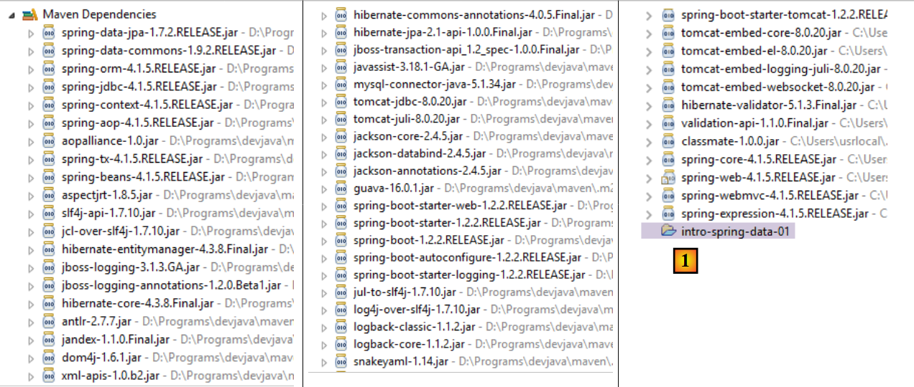 |
- in [1] zien we dat Eclipse de afhankelijkheid van het projectarchief [intro-spring-data-01] heeft gedetecteerd;
De bovenstaande afhankelijkheden gelden zowel voor de laag [DAO] als voor de laag [web].
13.5.3.1. Configuratie van de laag [web]
De laag [web] wordt geconfigureerd via een bestand [AppConfig]:
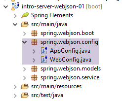 |
De klasse [WebConfig] configureert de laag [web]:
package spring.webjson.config;
import org.springframework.beans.factory.annotation.Autowired;
import org.springframework.boot.context.embedded.EmbeddedServletContainerFactory;
import org.springframework.boot.context.embedded.ServletRegistrationBean;
import org.springframework.boot.context.embedded.tomcat.TomcatEmbeddedServletContainerFactory;
import org.springframework.context.ApplicationContext;
import org.springframework.context.annotation.Bean;
import org.springframework.web.context.WebApplicationContext;
import org.springframework.web.servlet.DispatcherServlet;
import org.springframework.web.servlet.config.annotation.EnableWebMvc;
import org.springframework.web.servlet.config.annotation.WebMvcConfigurerAdapter;
import com.fasterxml.jackson.databind.ObjectMapper;
import com.fasterxml.jackson.databind.ser.impl.SimpleBeanPropertyFilter;
import com.fasterxml.jackson.databind.ser.impl.SimpleFilterProvider;
@EnableWebMvc
public class WebConfig extends WebMvcConfigurerAdapter {
// -------------------------------- configuratie van de [web]-laag
@Autowired
private ApplicationContext context;
@Bean
public DispatcherServlet dispatcherServlet() {
DispatcherServlet servlet = new DispatcherServlet((WebApplicationContext) context);
return servlet;
}
@Bean
public ServletRegistrationBean servletRegistrationBean(DispatcherServlet dispatcherServlet) {
return new ServletRegistrationBean(dispatcherServlet, "/*");
}
@Bean
public EmbeddedServletContainerFactory embeddedServletContainerFactory() {
return new TomcatEmbeddedServletContainerFactory("", 8080);
}
// filters jSON
@Bean(name = "jsonMapper")
public ObjectMapper jsonMapper() {
return new ObjectMapper();
}
@Bean(name = "jsonMapperCategorieWithProduits")
public ObjectMapper jsonMapperCategorieWithProduits() {
// mapper jSON
ObjectMapper mapper = new ObjectMapper();
// filters
mapper.setFilters(
new SimpleFilterProvider().addFilter("jsonFilterCategorie", SimpleBeanPropertyFilter.serializeAllExcept())
.addFilter("jsonFilterProduit", SimpleBeanPropertyFilter.serializeAllExcept("categorie")));
// resultaat
return mapper;
}
@Bean(name = "jsonMapperProduitWithCategorie")
public ObjectMapper jsonMapperProduitWithCategorie() {
// mapper jSON
ObjectMapper mapper = new ObjectMapper();
// filters
mapper.setFilters(
new SimpleFilterProvider().addFilter("jsonFilterProduit", SimpleBeanPropertyFilter.serializeAllExcept())
.addFilter("jsonFilterCategorie", SimpleBeanPropertyFilter.serializeAllExcept("produits")));
// resultaat
return mapper;
}
@Bean(name = "jsonMapperCategorieWithoutProduits")
public ObjectMapper jsonMapperCategorieWithoutProduits() {
// mapper jSON
ObjectMapper mapper = new ObjectMapper();
// filters
mapper.setFilters(new SimpleFilterProvider().addFilter("jsonFilterCategorie",
SimpleBeanPropertyFilter.serializeAllExcept("produits")));
// resultaat
return mapper;
}
@Bean(name = "jsonMapperProduitWithoutCategorie")
public ObjectMapper jsonMapperProduitWithoutCategorie() {
// mapper jSON
ObjectMapper mapper = new ObjectMapper();
// filters
mapper.setFilters(new SimpleFilterProvider().addFilter("jsonFilterProduit",
SimpleBeanPropertyFilter.serializeAllExcept("categorie")));
// resultaat
return mapper;
}
}
- regel 18: de annotatie [@EnableWebMvc] leidt tot automatische configuraties voor het Spring-framework MVC;
- regel 19: de klasse [WebConfig] breidt de Spring-klasse [WebMvcConfigurerAdapter] uit om bepaalde beans te herdefiniëren (regels 26-40);
- regels 22-23: injectie van de Spring-context;
- regels 25-29: definitie van de servlet van het Spring-framework MVC, die de verzoeken HTTP naar de juiste controller en methode doorstuurt. [DispatcherServlet] is een Spring-klasse;
- regels 31-34: hier wordt aangegeven dat deze servlet alle URL-verzoeken verwerkt;
- regels 36-39: de aanwezigheid van deze bean zorgt ervoor dat de Tomcat-server in de projectarchieven wordt geactiveerd. Deze wacht op verzoeken op poort 8080;
- regels 42-91: beans die zullen worden gebruikt om jSON-filters te beheren;
- regels 42-45: een mapper jSON zonder filters;
- regels 47-57: de mapper jSON waarmee een categorie met bijbehorende producten kan worden weergegeven. Merk op dat wanneer een categorie met bijbehorende producten wordt opgevraagd, zowel het filter jSON van de klasse [Categorie] als dat van de klasse [Produit] moet worden geconfigureerd. Dit is altijd het geval. Wanneer een klasse wordt geserialiseerd/deserialiseerd in jSON, moet het filter jSON van de klasse worden geconfigureerd, evenals die van alle afhankelijkheden die daarin moeten worden opgenomen;
- regels 59-69: de mapper jSON waarmee een product met zijn categorie kan worden weergegeven;
- regels 71-80: de mapper jSON waarmee een categorie zonder bijbehorende producten kan worden weergegeven;
- regels 82-91: de mapper jSON waarmee een product zonder de bijbehorende categorie kan worden weergegeven;
De klasse [AppConfig] configureert de gehele applicatie, d.w.z. de lagen [web] en [DAO]:
package spring.webjson.config;
import org.springframework.context.annotation.ComponentScan;
import org.springframework.context.annotation.Import;
import spring.data.config.DaoConfig;
@ComponentScan(basePackages = { "spring.webjson" })
@Import({ DaoConfig.class, WebConfig.class})
public class AppConfig {
}
- regel 9: we importeren de beans van de laag [DAO] en die van de laag [web];
- regel 8: geeft aan in welke pakketten andere Spring-beans te vinden zijn;
Merk op dat we nergens de annotatie [@EnableAutoConfiguration] hebben gebruikt. We hebben er de voorkeur aan gegeven de configuratie zelf te beheren.
13.5.4. Het applicatiemodel
 |
De klasse [ApplicationModel] ziet er als volgt uit:
package spring.webjson.models;
import java.util.List;
import org.springframework.beans.factory.annotation.Autowired;
import org.springframework.stereotype.Component;
import spring.data.dao.IDao;
import spring.data.entities.Categorie;
import spring.data.entities.Produit;
@Component
public class ApplicationModel implements IDao {
// de laag [DAO]
@Autowired
private IDao dao;
@Override
public void addProduits(List<Produit> produits) {
dao.addProduits(produits);
}
@Override
public void deleteAllProduits() {
dao.deleteAllProduits();
}
@Override
public void updateProduits(List<Produit> produits) {
dao.updateProduits(produits);
}
@Override
public List<Produit> getAllProduits() {
return dao.getAllProduits();
}
@Override
public void addCategories(List<Categorie> categories) {
dao.addCategories(categories);
}
@Override
public void deleteAllCategories() {
dao.deleteAllCategories();
}
@Override
public void updateCategories(List<Categorie> categories) {
dao.updateCategories(categories);
}
@Override
public List<Categorie> getAllCategories() {
return dao.getAllCategories();
}
@Override
public Produit getProduitByIdWithCategorie(Long idProduit) {
return dao.getProduitByIdWithCategorie(idProduit);
}
@Override
public Produit getProduitByNameWithCategorie(String nom) {
return dao.getProduitByNameWithCategorie(nom);
}
@Override
public Categorie getCategorieByIdWithProduits(Long idCategorie) {
return dao.getCategorieByIdWithProduits(idCategorie);
}
@Override
public Categorie getCategorieByNameWithProduits(String nom) {
return dao.getCategorieByNameWithProduits(nom);
}
@Override
public Produit getProduitByIdWithoutCategorie(Long idProduit) {
return dao.getProduitByIdWithoutCategorie(idProduit);
}
@Override
public Categorie getCategorieByIdWithoutProduits(Long idCategorie) {
return dao.getCategorieByIdWithoutProduits(idCategorie);
}
@Override
public Produit getProduitByNameWithoutCategorie(String nom) {
return dao.getProduitByNameWithoutCategorie(nom);
}
@Override
public Categorie getCategorieByNameWithoutProduits(String nom) {
return dao.getCategorieByNameWithoutProduits(nom);
}
}
- regel 12: de klasse is een Spring-singleton;
- regel 13: die de interface [IDao] van de laag [DAO] implementeert;
- regels 16-17: injectie van een referentie op de laag [DAO];
- regels 19-99: implementatie van de interface [IDao];
De architectuur van de weblaag ontwikkelt zich als volgt:
 |
- in [2b] communiceren de methoden van de controller(s) met het singleton [ApplicationModel];
Deze strategie biedt flexibiliteit bij het beheer van een eventuele cache. De klasse [ApplicationModel] kan worden gebruikt om informatie op te slaan die is verkregen uit de laag [DAO], of om configuratiegegevens op te slaan. Dit kan nuttig zijn wanneer men geen controle heeft over de laag [DAO]. Deze cachestrategie kan in de loop van de tijd veranderen. De wijzigingen hebben geen invloed op de code van de controller(s).
13.5.5. De controller
 |
 |
We hebben hier slechts één controller, de klasse [MyController].
13.5.5.1. De door deze controller blootgestelde URL
De URL die door deze controller worden weergegeven, zijn de volgende:
| Voegt producten toe aan de database. Deze worden gepost. Het antwoord is de tekenreeks jSON, de lijst met toegevoegde producten met hun primaire sleutel. |
| Verwijdert alle producten uit de database. |
| Werkt producten in de database bij. Deze worden gepost. Het antwoord is de tekenreeks jSON uit de lijst met bijgewerkte producten. |
| Haal de tekenreeks jSON op voor alle producten. |
| Voegt categorieën toe aan de database. Deze worden gepost. Het antwoord is de tekenreeks jSON uit de lijst met toegevoegde categorieën, inclusief hun primaire sleutel. Als de categorieën producten bevatten, worden deze ook aan de database toegevoegd. |
| Verwijdert alle categorieën uit de database, evenals alle producten daarin. Daarna is de database leeg. |
| Werkt de categorieën in de database bij. Deze worden verzonden. Het antwoord is de lijst met bijgewerkte categorieën. Als de categorieën producten bevatten, worden deze ook in de database bijgewerkt. Levert de tekenreeks jSON op van de gewijzigde categorieën; |
| Haal de tekenreeks jSON uit alle categorieën op. |
| Haal de tekenreeks jSON op van een product dat wordt aangeduid met zijn id, samen met de categorie. |
| Haal de tekenreeks jSON op van een product dat wordt aangeduid met zijn id, zonder de categorie. |
| Haal de tekenreeks jSON op van een product dat bij naam wordt aangeduid, samen met de categorie. |
| Haal de tekenreeks jSON op van een product dat bij naam wordt aangeduid, zonder de categorie. |
| Haal de tekenreeks jSON op uit een categorie die wordt aangeduid door haar id, samen met de bijbehorende producten. |
| Haal de tekenreeks jSON op uit een categorie die bij naam wordt aangeduid, samen met de bijbehorende producten. |
| Haal de tekenreeks jSON op uit een categorie die bij naam wordt aangeduid, zonder de producten ervan. |
| Haal de tekenreeks jSON op van een categorie die wordt aangeduid door haar id, zonder de bijbehorende producten. |
De weergegeven URL komen overeen met de methoden van de interface [IDao] van de laag [DAO]. De methoden van de webservice / jSON zijn allemaal volgens hetzelfde patroon opgebouwd. We zullen er een paar bekijken.
13.5.5.2. Het skelet van de controller
Het skelet van de controller ziet er als volgt uit:
package spring.webjson.service;
import java.util.ArrayList;
import java.util.List;
import java.util.Set;
import javax.servlet.http.HttpServletRequest;
import org.springframework.beans.factory.annotation.Autowired;
import org.springframework.beans.factory.annotation.Qualifier;
import org.springframework.stereotype.Controller;
import org.springframework.web.bind.annotation.PathVariable;
import org.springframework.web.bind.annotation.RequestMapping;
import org.springframework.web.bind.annotation.RequestMethod;
import org.springframework.web.bind.annotation.ResponseBody;
import com.fasterxml.jackson.core.JsonProcessingException;
import com.fasterxml.jackson.core.type.TypeReference;
import com.fasterxml.jackson.databind.ObjectMapper;
import com.google.common.io.CharStreams;
import spring.data.dao.DaoException;
import spring.data.entities.Categorie;
import spring.data.entities.Produit;
import spring.webjson.models.ApplicationModel;
import spring.webjson.models.Response;
@Controller
public class MyController {
// Spring-afhankelijkheden
@Autowired
private ApplicationModel application;
// filters jSON
@Autowired
@Qualifier("jsonMapper")
private ObjectMapper jsonMapper;
@Autowired
@Qualifier("jsonMapperCategorieWithProduits")
private ObjectMapper jsonMapperCategorieWithProduits;
@Autowired
@Qualifier("jsonMapperProduitWithCategorie")
private ObjectMapper jsonMapperProduitWithCategorie;
@Autowired
@Qualifier("jsonMapperCategorieWithoutProduits")
private ObjectMapper jsonMapperCategorieWithoutProduits;
@Autowired
@Qualifier("jsonMapperProduitWithoutCategorie")
private ObjectMapper jsonMapperProduitWithoutCategorie;
// de klasse [MyController] is een singleton en wordt slechts één keer geïnstantieerd, namelijk de bean
public MyController() {
// System.out.println("MyController");
}
@RequestMapping(value = "/addProduits", method = RequestMethod.POST, consumes = "application/json; charset=UTF-8", produces = "application/json; charset=UTF-8")
@ResponseBody
public String addProduits(HttpServletRequest request) throws JsonProcessingException {
...
}
- regel 28: de annotatie [@Controller] maakt van de klasse een Spring-component;
- regels 32-33: injectie van een referentie naar de klasse [ApplicationModel];
- regels 36-50: injectie van verwijzingen naar de mappers jSON;
- regel 58: de blootgestelde URL is [/addProduits]. De client moet een methode [POST] gebruiken om zijn verzoek te doen (method = RequestMethod.POST). Hij moet de verzonden waarde versturen in de vorm van een tekenreeks jSON (consumes = "application/json; charset=UTF-8"). De methode stuurt zelf het antwoord terug naar de klant (regel 59). Dit zal een tekenreeks zijn (regel 60). De header HTTP [Content-type : application/json; charset=UTF-8] wordt naar de client verzonden om aan te geven dat deze een tekenreeks jSON zal ontvangen (regel 58);
- regel 60: de methode [addProduits] retourneert de tekenreeks jSON uit de lijst met producten die aan de database zijn toegevoegd;
13.5.5.3. Het antwoord van de methoden van de controller
Alle methoden van de controller retourneren het volgende antwoord van het type [Response]:
 |
package spring.webjson.service;
import java.util.List;
public class Response<T> {
// ----------------- eigenschappen
// status van de bewerking
private int status;
// eventuele foutmeldingen
private List<String> messages;
// de inhoud van het antwoord
private T body;
// constructors
public Response() {
}
public Response(int status, List<String> messages, T body) {
this.status = status;
this.messages = messages;
this.body = body;
}
// getters en setters
...
}
- regel 5: het antwoord bevat een type T;
- regel 13: het antwoord van het type T;
- regels 9-11: het is mogelijk dat een methode een uitzondering tegenkomt. In dat geval zal deze een antwoord retourneren met:
- regel 9: status!=0;
- regel 11: de lijst met opgetreden fouten;
13.5.5.4. L'URL [/addProduits]
L'URL [/addProduits] wordt verwerkt door de volgende methode:
@RequestMapping(value = "/addProduits", method = RequestMethod.POST, consumes = "application/json; charset=UTF-8", produces = "application/json; charset=UTF-8")
@ResponseBody
public String addProduits(HttpServletRequest request) throws JsonProcessingException {
// antwoord
Response<List<Produit>> response;
try {
// de verzonden waarde wordt opgehaald
String body = CharStreams.toString(request.getReader());
List<Produit> produits = jsonMapperProduitWithoutCategorie.readValue(body, new TypeReference<List<Produit>>() {
});
// we herstellen de koppeling tussen producten en categorieën
for (Produit produit : produits) {
produit.setCategorie(application.getCategorieByIdWithoutProduits(produit.getIdCategorie()));
}
// de producten worden opgeslagen
application.addProduits(produits);
response = new Respon se<List<Produit>>(0, null, produits);
} catch (DaoException e1) {
response = new Response<List<Produit>>(1000, e1.getErreurs(), null);
} catch (Exception e2) {
response = new Response<List<Produit>>(1000, getErreursForException(e2), null);
}
// antwoord jSON
return jsonMapperProduitWithoutCategorie.writeValueAsString(response);
}
- regel 3: de methode accepteert als parameter [HttpServletRequest request], waarin alle informatie over het verzoek van de klant is opgenomen;
- regel 5: het antwoord dat naar de klant wordt verzonden: een lijst met producten;
- regel 8: de verzonden waarde wordt opgehaald. De klasse [CharStreams] behoort tot de bibliotheek [Google Guava], waarvan de verwijzing is toegevoegd in het bestand [pom.xml]. We ontvangen de door de klant verzonden tekenreeks jSON. Deze moet worden gedeserialiseerd om er iets mee te kunnen doen;
- regels 8-10: de deserialisatie wordt uitgevoerd. We krijgen een lijst met producten waarbij elk product een veld [categorie=null] heeft;
- regels 12-14: het veld [categorie] van alle producten in de lijst wordt opnieuw ingesteld. Hiervoor wordt het veld [idCategorie] van het product gebruikt, dat zelf al is geïnitialiseerd;
- regel 16: de producten worden in de database ingevoerd;
- regel 17: het object [response] wordt geïnitialiseerd met de productlijst;
- regels 18-19: gevallen waarin de methode een uitzondering van de laag [DAO] tegenkomt. Het antwoord wordt geïnitialiseerd met [status=1000] (foutcode) [messages=e1.getMessages()], d.w.z. dat de lijst met fouten die aan de serverzijde zijn opgetreden, naar de client wordt verzonden;
- regels 20-21: het geval waarin de methode een ander type uitzondering tegenkomt. Het antwoord wordt geïnitialiseerd met [status=1000] (foutcode) [messages=getErreursForException(e)], waarbij [getErreursForException] een privémethode van de klasse is die de lijst met fouten teruggeeft die verband houden met de uitzonderingen in de uitzonderingsstack van e, en [body=null];
- regel 24: de tekenreeks jSON wordt teruggestuurd als antwoord;
13.5.5.5. De URL [/getAllProduits]
De URL [/getAllProduits] wordt verwerkt door de volgende methode:
@RequestMapping(value = "/getAllProduits", method = RequestMethod.GET, produces = "application/json; charset=UTF-8")
@ResponseBody
public String getAllProduits() throws JsonProcessingException {
// antwoord
Response<List<Produit>> response;
try {
response = new Response<List<Produit>>(0, null, application.getAllProduits());
} catch (DaoException e1) {
response = new Response<List<Produit>>(1003, e1.getErreurs(), null);
} catch (Exception e2) {
response = new Response<List<Produit>>(1003, getErreursForException(e2), null);
}
// antwoord jSON
return jsonMapperProduitWithoutCategorie.writeValueAsString(response);
}
- regel 1: de URL [/getAllProduits] wordt opgevraagd met een bewerking [GET]. Dit levert jSON op;
- regel 2: de methode stuurt zelf het antwoord jSON naar de client;
- regel 5: de methode verstuurt de tekenreeks jSON van het type [Response<List<Produit>>];
- regel 7: de producten worden opgevraagd zonder hun categorie;
- regels 8-12: in geval van een fout wordt het antwoord geïnitialiseerd met een foutcode en foutmeldingen;
- regel 14: het antwoord jSON wordt naar de klant verzonden;
13.5.5.6. Conclusion
We zullen de andere methoden van de controller niet bespreken. Ze lijken op een van de twee methoden die we zojuist hebben besproken.
13.5.6. De uitvoeringsklasse van de webservice / jSON
 |
De klasse [Boot] is de uitvoerbare klasse van het project:
package spring.webjson.boot;
import org.springframework.boot.SpringApplication;
import spring.webjson.server.config.AppConfig;
public class Boot {
public static void main(String[] args) {
SpringApplication.run(AppConfig.class, args);
}
}
- regel 10: de statische methode [SpringApplication.run] wordt uitgevoerd. De klasse [SpringApplication] is een klasse van het project [Spring Boot] (regel 3). Er worden twee parameters aan doorgegeven:
- [AppConfig.class]: de klasse die de gehele applicatie configureert;
- [args]: eventuele argumenten die worden doorgegeven aan de methode [main] op regel 9. Deze parameter wordt hier niet gebruikt;
Wanneer deze klasse wordt uitgevoerd, zijn de volgende logbestanden beschikbaar:
- regels 17-19: opstarten van de Tomcat-server die de webservice / jSON gaat uitvoeren;
- regels 25-33: opbouw van de laag [DAO];
- regels 32-51: de blootgestelde URL worden gedetecteerd;
13.5.7. Tests van de webservice / jSON
Om de tests uit te voeren, genereren we de database MySQL [dbintrospringdata] op basis van het script SQL [dbintrospringdata.sql]:
 |
Vervolgens gebruiken we de client [Advanced Rest Client] (zie paragraaf 22.5) om de URL-gegevens op te vragen die door de webservice / jSON worden aangeboden (de webservice / jSON moet gestart zijn).
 |
- in [1-3] vragen we de URL [/getAllCategories] via een commando HTTP GET;
We krijgen het volgende antwoord:
 |
- in [1], het verzoek HTTP van de client;
- in [2], het antwoord HTTP van de server;
- in [3] geeft de status [200 OK] aan dat de server het verzoek correct heeft verwerkt;
- in [4], het antwoord jSON van de server;
Het volledige antwoord jSON luidt als volgt:
{"status":0,"messages":null,"body":[{"id":415,"version":0,"nom":"categorie0","produits":[{"id":1849,"version":0,"nom":"produit00","idCategorie":415,"prix":100.0,"description":"desc00"},{"id":1850,"version":0,"nom":"produit01","idCategorie":415,"prix":101.0,"description":"desc01"},{"id":1851,"version":0,"nom":"produit02","idCategorie":415,"prix":102.0,"description":"desc02"},{"id":1852,"version":0,"nom":"produit03","idCategorie":415,"prix":103.0,"description":"desc03"},{"id":1853,"version":0,"nom":"produit04","idCategorie":415,"prix":104.0,"description":"desc04"}]},{"id":416,"version":0,"nom":"categorie1","produits":[{"id":1856,"version":0,"nom":"produit12","idCategorie":416,"prix":112.0,"description":"desc12"},{"id":1857,"version":0,"nom":"produit13","idCategorie":416,"prix":113.0,"description":"desc13"},{"id":1858,"version":0,"nom":"produit14","idCategorie":416,"prix":114.0,"description":"desc14"},{"id":1854,"version":0,"nom":"produit10","idCategorie":416,"prix":110.0,"description":"desc10"},{"id":1855,"version":0,"nom":"produit11","idCategorie":416,"prix":111.0,"description":"desc11"}]}]}
- status:0 betekent dat er geen fouten aan de serverzijde zijn opgetreden;
- berichten: null betekent dat er geen foutmeldingen zijn;
- body: is de hoofdtekst van het antwoord, in dit geval de lijst met categorieën en hun producten. Er zijn twee categorieën met elk 5 producten;
We gaan aan de categorie [categorie1] het product [produit15] toevoegen. Hiervoor gebruiken we de URL [/addCategories] met de volgende code:
@RequestMapping(value = "/addCategories", method = RequestMethod.POST, consumes = "application/json; charset=UTF-8", produces = "application/json; charset=UTF-8")
@ResponseBody
public String addCategories(HttpServletRequest request) throws JsonProcessingException {
Response<List<Categorie>> response;
ObjectMapper mapper = context.getBean(ObjectMapper.class);
// de categorieën worden behouden
try {
// de opgeslagen waarde wordt opgehaald
String body = CharStreams.toString(request.getReader());
mapper.setFilters(jsonFilterCategorieWithProduits);
List<Categorie> categories = mapper.readValue(body, new TypeReference<List<Categorie>>() {
});
// de koppeling tussen producten en categorieën wordt hersteld
for (Categorie categorie : categories) {
Set<Produit> produits = categorie.getProduits();
if (produits != null) {
for (Produit produit : categorie.getProduits()) {
produit.setCategorie(categorie);
}
}
}
// de categorieën worden opgeslagen
application.addCategories(categories);
response = new Response<List<Categorie>>(0, null, categories);
} catch (Exception e) {
response = new Response<List<Categorie>>(1004, getErreursForException(e), null);
}
// antwoord jSON
return mapper.writeValueAsString(response);
}
- regel 1: de klant moet een POST opgeven en de verzonden waarde moet een tekenreeks jSON zijn;
- regels 9-12: de verzonden waarde moet een lijst zijn van categorieën met de bijbehorende producten;
We gaan een categorie [categorie2] aanmaken met een product [produit21]. De te verzenden tekenreeks jSON is dan als volgt:
[{"id":null,"version":0,"nom":"categorie2","produits":[{"id":null,"version":0,"nom":"produit21","idCategorie":null,"prix":111.0,"description":"desc21"}]}]
Het verzoek aan de webservice /jSON wordt als volgt gedaan:
 |
- in [1], de gevraagde URL;
- in [2] wordt deze aangevraagd via een bewerking POST;
- in [3] wordt de string jSON verzonden;
- in [4] wordt aan de server aangegeven dat jSON naar de server wordt verzonden;
Het antwoord van de server is als volgt:
 |
- in [1] zien we dat zowel de categorie als het product nu een primaire sleutel hebben, wat aangeeft dat ze waarschijnlijk in de database zijn ingevoerd. We gaan dit controleren met behulp van URL en [/getCategorieByNameWithProduits/categorie2]:
 |
We krijgen het volgende resultaat:
 |
We hebben inderdaad de categorie [categorie2] met het enige product [produit21] gevonden. We kunnen ook alleen het product opvragen. Laten we daarvoor de URL [/getProduitByIdWithoutCategorie/1859] gebruiken:
 |
We krijgen het volgende resultaat:
 |
Alle bewerkingen met [GET] kunnen in een gewone browser worden uitgevoerd:
 |
De lezer wordt uitgenodigd om de andere URL-bewerkingen van de webservice / json te testen.
13.6. Een client die is geprogrammeerd voor de webservice / jSON
Nu de [dbintrospringdata]-database op het web beschikbaar is, gaan we een applicatie schrijven die hiervan gebruikmaakt. We krijgen dan de volgende client/server-architectuur:
 |
De clienttoepassing zal uit twee lagen bestaan:
- een [DAO] [2]-laag om te communiceren met de webapplicatie / jSON die de database beschikbaar stelt;
- een testlaag JUnit [1] om te controleren of de client en de server naar behoren functioneren;
13.6.1. Het Eclipse-project
Het Eclipse-project van de client is als volgt:
 |
- de map [src/main/java] implementeert de laag [DAO];
- de map [src/test/java] implementeert de tests JUnit;
13.6.2. Maven-configuratie van het project
Het project is een Maven-project dat is geconfigureerd via het volgende bestand [pom.xml]:
<project xmlns="http://maven.apache.org/POM/4.0.0" xmlns:xsi="http://www.w3.org/2001/XMLSchema-instance"
xsi:schemaLocation="http://maven.apache.org/POM/4.0.0 http://maven.apache.org/xsd/maven-4.0.0.xsd">
<modelVersion>4.0.0</modelVersion>
<groupId>istia.st.webjson</groupId>
<artifactId>intro-client-webjson-01</artifactId>
<version>0.0.1-SNAPSHOT</version>
<description>Client console du serveur web / jSON</description>
<properties>
<project.build.sourceEncoding>UTF-8</project.build.sourceEncoding>
<java.version>1.8</java.version>
</properties>
<parent>
<groupId>org.springframework.boot</groupId>
<artifactId>spring-boot-starter-parent</artifactId>
<version>1.2.7.RELEASE</version>
</parent>
<dependencies>
<!-- Spring -->
<dependency>
<groupId>org.springframework</groupId>
<artifactId>spring-web</artifactId>
</dependency>
<!-- bibliotheek jSON die door Spring wordt gebruikt -->
<dependency>
<groupId>com.fasterxml.jackson.core</groupId>
<artifactId>jackson-core</artifactId>
</dependency>
<dependency>
<groupId>com.fasterxml.jackson.core</groupId>
<artifactId>jackson-databind</artifactId>
</dependency>
<!-- component die door Spring wordt gebruikt RestTemplate -->
<dependency>
<groupId>org.apache.httpcomponents</groupId>
<artifactId>httpclient</artifactId>
</dependency>
<!-- Google Guava -->
<dependency>
<groupId>com.google.guava</groupId>
<artifactId>guava</artifactId>
<version>16.0.1</version>
<scope>test</scope>
</dependency>
<!-- logboekbibliotheek -->
<dependency>
<groupId>org.springframework.boot</groupId>
<artifactId>spring-boot-starter-logging</artifactId>
</dependency>
<!-- Spring Boot Test -->
<dependency>
<groupId>org.springframework.boot</groupId>
<artifactId>spring-boot-starter-test</artifactId>
<scope>test</scope>
</dependency>
<!-- Spring Boot -->
<dependency>
<groupId>org.springframework.boot</groupId>
<artifactId>spring-boot</artifactId>
<scope>test</scope>
</dependency>
</dependencies>
<!-- plugins -->
<build>
<plugins>
<plugin>
<artifactId>maven-assembly-plugin</artifactId>
<configuration>
<descriptorRefs>
<descriptorRef>jar-with-dependencies</descriptorRef>
</descriptorRefs>
</configuration>
</plugin>
<plugin>
<groupId>org.apache.maven.plugins</groupId>
<artifactId>maven-surefire-plugin</artifactId>
<version>2.18.1</version>
</plugin>
</plugins>
</build>
<name>intro-client-webjson-01</name>
</project>
- regels 14-18: het bovenliggende Maven-project [spring-boot-starter-parent] waarmee we een aantal afhankelijkheden kunnen definiëren zonder hun versies, aangezien deze in het bovenliggende project zijn gedefinieerd;
- regels 22-25: hoewel we geen webapplicatie schrijven, hebben we de afhankelijkheid [spring-web] nodig, die de klasse [RestTemplate] meebrengt waarmee we eenvoudig kunnen koppelen aan een webapplicatie / jSON;
- regels 27-34: een bibliotheek jSON;
- regels 36-39: een afhankelijkheid waarmee we een timeout kunnen koppelen aan de HTTP-verzoeken van de client. Een timeout is de maximale wachttijd voor het antwoord van de server. Als deze tijd wordt overschreden, meldt de client een timeout-fout door een uitzondering te genereren;
- regels 41-46: de Google Guava-bibliotheek die in de test JUnit wordt gebruikt. Om deze reden hebben we het bereik ervan ingesteld op [test] (regel 45). Dit betekent dat deze afhankelijkheid alleen wordt opgenomen bij het uitvoeren van code uit de branch [src/test/java];
- regels 48-51: de logboekbibliotheek;
- regels 52-63: de afhankelijkheid voor de tests JUnit. Deze voegt met name de bibliotheek JUnit 4 toe die nodig is voor de tests. Deze afhankelijkheden hebben het attribuut [<scope>test</scope>], wat aangeeft dat ze alleen nodig zijn voor de testfase. Ze worden niet opgenomen in het uiteindelijke projectarchief;
13.6.3. Implementatie van de laag [DAO]
 |
 |
- het pakket [spring.client.config] bevat de Spring-configuratie van de laag [DAO];
- het pakket [spring.client.dao] bevat de implementatie van de laag [DAO];
- het pakket [spring.client.entities] bevat de objecten die worden uitgewisseld met de webservice / jSON;
13.6.3.1. Configuration
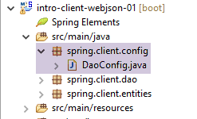 |
De klasse [DaoConfig] zorgt voor de Spring-configuratie van de laag [DAO]. De code ervan is als volgt:
package spring.client.config;
import org.springframework.context.annotation.Bean;
import org.springframework.context.annotation.ComponentScan;
import org.springframework.context.annotation.Configuration;
import org.springframework.http.client.HttpComponentsClientHttpRequestFactory;
import org.springframework.web.client.RestTemplate;
import com.fasterxml.jackson.databind.ObjectMapper;
import com.fasterxml.jackson.databind.ser.impl.SimpleBeanPropertyFilter;
import com.fasterxml.jackson.databind.ser.impl.SimpleFilterProvider;
@ComponentScan({ "spring.client.dao" })
public class DaoConfig {
// constanten
static private final int TIMEOUT = 1000;
static private final String URL_WEBJSON = "http://localhost:8080";
@Bean
public RestTemplate restTemplate(int timeout) {
// Aanmaken van de component RestTemplate
HttpComponentsClientHttpRequestFactory factory = new HttpComponentsClientHttpRequestFactory();
RestTemplate restTemplate = new RestTemplate(factory);
// time-out van de communicatie
factory.setConnectTimeout(timeout);
factory.setReadTimeout(timeout);
// resultaat
return restTemplate;
}
@Bean
public int timeout() {
return TIMEOUT;
}
@Bean
public String urlWebJson() {
return URL_WEBJSON;
}
// filters jSON
@Bean(name = "jsonMapper")
public ObjectMapper jsonMapper() {
return new ObjectMapper();
}
@Bean(name = "jsonMapperCategorieWithProduits")
public ObjectMapper jsonMapperCategorieWithProduits() {
// mapper jSON
ObjectMapper mapper = new ObjectMapper();
// filters
mapper.setFilters(
new SimpleFilterProvider().addFilter("jsonFilterCategorie", SimpleBeanPropertyFilter.serializeAllExcept())
.addFilter("jsonFilterProduit", SimpleBeanPropertyFilter.serializeAllExcept("categorie")));
// resultaat
return mapper;
}
@Bean(name = "jsonMapperProduitWithCategorie")
public ObjectMapper jsonMapperProduitWithCategorie() {
// mapper jSON
ObjectMapper mapper = new ObjectMapper();
// filters
mapper.setFilters(
new SimpleFilterProvider().addFilter("jsonFilterProduit", SimpleBeanPropertyFilter.serializeAllExcept())
.addFilter("jsonFilterCategorie", SimpleBeanPropertyFilter.serializeAllExcept("produits")));
// resultaat
return mapper;
}
@Bean(name = "jsonMapperCategorieWithoutProduits")
public ObjectMapper jsonMapperCategorieWithoutProduits() {
// mapper jSON
ObjectMapper mapper = new ObjectMapper();
// filters
mapper.setFilters(new SimpleFilterProvider().addFilter("jsonFilterCategorie",
SimpleBeanPropertyFilter.serializeAllExcept("produits")));
// resultaat
return mapper;
}
@Bean(name = "jsonMapperProduitWithoutCategorie")
public ObjectMapper jsonMapperProduitWithoutCategorie() {
// mapper jSON
ObjectMapper mapper = new ObjectMapper();
// filters
mapper.setFilters(new SimpleFilterProvider().addFilter("jsonFilterProduit",
SimpleBeanPropertyFilter.serializeAllExcept("categorie")));
// resultaat
return mapper;
}
}
- regel 13: de klasse is een Spring-configuratieklasse – Spring-componenten zijn te vinden in het pakket [spring.client.dao];
- regel 17: er wordt een timeout van één seconde (1000 ms) ingesteld;
- regels 32-35: de bean die deze waarde retourneert;
- regel 18: de URL van de webservice / jSON;
- regels 37-40: de bean die deze waarde retourneert;
- regels 20-30: de configuratie van de klasse [RestTemplate] die de communicatie met de webservice / jSON verzorgt. Wanneer deze niet hoeft te worden geconfigureerd, kan deze in de code worden gebruikt met een eenvoudige [new RestTemplate()]. Hier willen we de timeout instellen voor de communicatie met de webservice / jSON. De bean [timeout] uit regel 36 wordt doorgegeven als parameter aan de methode [restTemplate] uit regel 24;
- regel 23: de component [HttpComponentsClientHttpRequestFactory] is de component waarmee we de timeout voor de uitwisselingen kunnen instellen (regels 29-30);
- regel 24: de klasse [RestTemplate] is opgebouwd met deze component. Aangezien deze klasse op deze component steunt om te communiceren met de webservice / jSON, zullen de uitwisselingen inderdaad onderworpen zijn aan de timeout;
- de client en de server zullen tekstregels uitwisselen. Een converter zorgt ervoor dat een object naar tekst wordt geserialiseerd en omgekeerd dat tekst naar een object wordt gedeserialiseerd. Er kunnen meerdere converters aan de klasse [RestTemplate] zijn gekoppeld en welke op een bepaald moment wordt gekozen, hangt af van de HTTP-headers die door de server worden verzonden. In dit geval hebben we geen converter. De component [RestTemplate] zal dus niet proberen de volgende twee elementen op enigerlei wijze te converteren:
- de verzonden tekst;
- de tekst die als antwoord is ontvangen;
Deze teksten zijn jSON-strings die dus door de component [RestTemplate] ongewijzigd worden gelaten. Wij, als ontwikkelaars, zullen zelf de nodige jSON-serialisaties en -deserialisaties uitvoeren. Dit komt doordat de filters die op de verzonden waarde en het ontvangen antwoord moeten worden toegepast, verschillend kunnen zijn en de ervaring leert dat het eenvoudiger is om deze zelf te beheren dan te proberen de component [RestTemplate] zo te configureren dat deze de juiste converter jSON gebruikt;
- regels 42-92: definiëren jSON-filters. Dit zijn dezelfde als die van de server, die in paragraaf 13.5.3.1 worden gepresenteerd en uitgelegd;
- regels 43-46: een mapper jSON zonder filters;
- regels 64-68: een mapper jSON om een categorie zonder producten te krijgen;
- regels 48-58: een mapper jSON om een categorie met de bijbehorende producten te krijgen;
- regels 83-92: een mapper jSON om een product zonder categorie te krijgen;
- regels 60-70: een mapper jSON om een product met zijn categorie te krijgen;
Al deze beans zullen beschikbaar zijn voor de codes van de laag [DAO] en voor de Junit-test.
13.6.3.2. De entiteiten
 |
De entiteiten die door de laag [DAO] worden verwerkt, zijn de entiteiten die deze uitwisselt met de webservice /jSON. Dit zijn de artikelen en de producten. Aan de serverzijde hadden deze entiteiten persistentie-annotaties JPA. Hier zijn deze annotaties verwijderd. Ter herinnering geven we de code van de entiteiten nogmaals weer:
[AbstractEntity]
package spring.client.entities;
import com.fasterxml.jackson.core.JsonProcessingException;
import com.fasterxml.jackson.databind.ObjectMapper;
public abstract class AbstractEntity {
// eigenschappen
protected Long id;
protected Long version;
// constructors
public AbstractEntity() {
}
public AbstractEntity(Long id, Long version) {
this.id = id;
this.version = version;
}
// herdefinitie van [equals] en [hashcode]
@Override
public int hashCode() {
return (id != null ? id.hashCode() : 0);
}
@Override
public boolean equals(Object entity) {
if (!(entity instanceof AbstractEntity)) {
return false;
}
String class1 = this.getClass().getName();
String class2 = entity.getClass().getName();
if (!class2.equals(class1)) {
return false;
}
AbstractEntity other = (AbstractEntity) entity;
return id != null && this.id == other.id.longValue();
}
// handtekening jSON
public String toString() {
ObjectMapper mapper = new ObjectMapper();
try {
return mapper.writeValueAsString(this);
} catch (JsonProcessingException e) {
e.printStackTrace();
return null;
}
}
// getters en setters
...
}
[Categorie]
package spring.client.entities;
import java.util.HashSet;
import java.util.Set;
import com.fasterxml.jackson.annotation.JsonFilter;
@JsonFilter("jsonFilterCategorie")
public class Categorie extends AbstractEntity {
// eigenschappen
private String nom;
// gerelateerde producten
public Set<Produit> produits = new HashSet<Produit>();
// constructors
public Categorie() {
}
public Categorie(String nom) {
this.nom = nom;
}
// methoden
public void addProduit(Produit produit) {
// het product toevoegen
produits.add(produit);
// de categorie instellen
produit.setCategorie(this);
}
// getters en setters
...
}
[Produit]
package spring.webjson.client.entities;
import com.fasterxml.jackson.annotation.JsonFilter;
@JsonFilter("jsonFilterProduit")
public class Produit extends AbstractEntity {
// de naam
private String nom;
// het categorienummer
private Long idCategorie;
// de prijs
private double prix;
// de beschrijving
private String description;
// de categorie
private Categorie categorie;
// fabrikanten
public Produit() {
}
public Produit(String nom, double prix, String description) {
this.nom = nom;
this.prix = prix;
this.description = description;
}
// getters en setters
...
}
13.6.3.3. De klasse [DaoException]
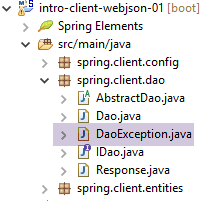 |
Wanneer de laag [DAO] een fout tegenkomt, genereert deze een uitzondering van het type [DaoException]. Deze klasse wordt aan de serverzijde gebruikt en wordt beschreven in paragraaf 11.3.7.
13.6.3.4. De interface van de laag [DAO]
 |
De laag [DAO] biedt de interface [IDao] die in paragraaf 11.3.7 wordt beschreven.
package spring.client.dao;
import java.util.List;
import spring.client.entities.Categorie;
import spring.client.entities.Produit;
public interface IDao {
// een productlijst toevoegen
public List<Produit> addProduits(List<Produit> produits);
// alle producten verwijderen
public void deleteAllProduits();
// een productlijst bijwerken
public List<Produit> updateProduits(List<Produit> produits);
// alle producten ophalen
public List<Produit> getAllProduits();
// een lijst met categorieën toevoegen
public List<Categorie> addCategories(List<Categorie> categories);
// alle categorieën verwijderen
public void deleteAllCategories();
// een lijst met categorieën bijwerken
public List<Categorie> updateCategories(List<Categorie> categories);
// alle categorieën ophalen
public List<Categorie> getAllCategories();
// een specifiek product
public Produit getProduitByIdWithCategorie(Long idProduit);
public Produit getProduitByIdWithoutCategorie(Long idProduit);
public Produit getProduitByNameWithCategorie(String nom);
public Produit getProduitByNameWithoutCategorie(String nom);
// een specifieke categorie
public Categorie getCategorieByIdWithProduits(Long idCategorie);
public Categorie getCategorieByIdWithoutProduits(Long idCategorie);
public Categorie getCategorieByNameWithProduits(String nom);
public Categorie getCategorieByNameWithoutProduits(String nom);
}
13.6.3.5. Het antwoord van de webservice / jSON
 |
We hebben gezien dat alle URL van de webservice / jSON een type [Response] opleverden, zoals gedefinieerd in paragraaf 13.5.5.3. We nemen deze klasse hier nogmaals op:
package spring.client.dao;
import java.util.List;
public class Response<T> {
// ----------------- eigenschappen
// status van de bewerking
private int status;
// eventuele foutmeldingen
private List<String> messages;
// de inhoud van het antwoord
private T body;
// constructors
public Response() {
}
public Response(int status, List<String> messages, T body) {
this.status = status;
this.messages = messages;
this.body = body;
}
// getters en setters
...
}
13.6.3.6. Implementatie van de uitwisselingen met de webservice / jSON
 |
De klasse [AbstractDao] implementeert de uitwisselingen met de webservice / jSON:
package spring.client.dao;
import java.net.URI;
import java.net.URISyntaxException;
import org.springframework.beans.factory.annotation.Autowired;
import org.springframework.core.ParameterizedTypeReference;
import org.springframework.http.MediaType;
import org.springframework.http.RequestEntity;
import org.springframework.web.client.RestTemplate;
public abstract class AbstractDao {
// gegevens
@Autowired
protected RestTemplate restTemplate;
@Autowired
protected String urlServiceWebJson;
// algemene aanvraag
protected String getResponse(String url, String jsonPost) {
// URL: URL om contact op te nemen
// jsonPost: de waarde jSON moet worden verzonden
try {
// verzoek uitvoeren
RequestEntity<?> request;
if (jsonPost != null) {
// verzoek POST
request = RequestEntity.post(new URI(String.format("%s%s", urlServiceWebJson, url)))
.header("Content-Type", "application/json").accept(MediaType.APPLICATION_JSON).body(jsonPost);
} else {
// verzoek GET
request = RequestEntity.get(new URI(String.format("%s%s", urlServiceWebJson, url)))
.accept(MediaType.APPLICATION_JSON).build();
}
// de query wordt uitgevoerd
return restTemplate.exchange(request, new ParameterizedTypeReference<String>() {
}).getBody();
} catch (URISyntaxException e1) {
throw new DaoException(20, e1);
} catch (RuntimeException e2) {
throw new DaoException(21, e2);
}
}
}
- regels 15-16: injectie van de component [RestTemplate] die de communicatie met de server verzorgt;
- regels 17-18: injectie van de URL van de webservice / jSON;
De implementatie van de communicatiemethoden met de server is ondergebracht in de methode [getResponse]:
- regel 21: de methode ontvangt 2 parameters:
- [url]: de aangevraagde URL;
- [jsonPost]: de te verzenden tekenreeks jSON, anders null. Als [jsonPost==null], wordt het verzoek van URL gedaan met een GET, anders met een POST;
- regel 38: de instructie die het verzoek naar de server stuurt en het antwoord ontvangt. De component [RestTemplate] biedt een groot aantal methoden voor communicatie met de server. We hebben hier gekozen voor de methode [exchange], maar er zijn ook andere;
- regels 27-36: we moeten het verzoek van het type [RequestEntity] opstellen. Dit verschilt naargelang men een GET of een POST gebruikt om het verzoek te doen;
- regels 30-31: de query voor een GET. De klasse [RequestEntity] biedt statische methoden om de verzoeken GET, POST, HEAD, ... aan te maken Met de methode [RequestEntity.get] kan een verzoek GET worden aangemaakt door de verschillende methoden die dit verzoek opbouwen aan elkaar te koppelen:
- de methode [RequestEntity.get] accepteert als parameter de doel-URL in de vorm van een URI-instantie,
- met de methode [accept] kunnen de elementen van de header HTTP [Accept] worden gedefinieerd. Hier geven we aan dat we het type [application/json] accepteren dat de server zal verzenden;
- de methode [build] gebruikt deze verschillende gegevens om het type [RequestEntity] van het verzoek samen te stellen;
- regels 34-35: het verzoek voor een POST. Met de methode [RequestEntity.post] kan een verzoek van het type POST worden aangemaakt door de verschillende methoden die dit verzoek samenstellen achter elkaar te plaatsen:
- de methode [RequestEntity.post] accepteert als parameter de doel-URL in de vorm van een URI-instantie,
- de methode [header] definieert een header HTTP. Hier sturen we de header [Content-Type: application/json] naar de server om aan te geven dat de verzonden waarde in de vorm van een tekenreeks jSON zal worden ontvangen;
- met de methode [accept] geven we aan dat we het type [application/json] accepteren dat de server zal verzenden;
- de methode [body] stelt de verzonden waarde vast. Dit is de vierde parameter van de generieke methode [getResponse] (regel 1);
- regel 38: de methode [RestTemplate].exchange retourneert een type [ResponseEntity<String>] dat het volledige antwoord van de server omvat: de headers HTTP en de hoofdtekst van het document. Met de methode [ResponseEntity].getBody() kan deze inhoud worden opgehaald, die het antwoord van de server vertegenwoordigt, in dit geval een tekenreeks;
13.6.3.7. Implementatie van de interface [IDao]
 |
De klasse [Dao] implementeert de interface [IDao]:
package spring.client.dao;
import java.io.IOException;
import java.util.List;
import org.springframework.beans.factory.annotation.Autowired;
import org.springframework.beans.factory.annotation.Qualifier;
import org.springframework.context.ApplicationContext;
import org.springframework.stereotype.Component;
import com.fasterxml.jackson.core.type.TypeReference;
import com.fasterxml.jackson.databind.ObjectMapper;
import spring.client.entities.Categorie;
import spring.client.entities.Produit;
@Component
public class Dao extends AbstractDao implements IDao {
@Autowired
private ApplicationContext context;
// filters jSON
@Autowired
@Qualifier("jsonMapper")
private ObjectMapper jsonMapper;
@Autowired
@Qualifier("jsonMapperCategorieWithProduits")
private ObjectMapper jsonMapperCategorieWithProduits;
@Autowired
@Qualifier("jsonMapperProduitWithCategorie")
private ObjectMapper jsonMapperProduitWithCategorie;
@Autowired
@Qualifier("jsonMapperCategorieWithoutProduits")
private ObjectMapper jsonMapperCategorieWithoutProduits;
@Autowired
@Qualifier("jsonMapperProduitWithoutCategorie")
private ObjectMapper jsonMapperProduitWithoutCategorie;
@Override
public List<Produit> addProduits(List<Produit> produits) {
// ----------- producten toevoegen (zonder hun categorie)
...
}
- regel 17: de klasse [Dao] is een Spring-component waarin dus andere Spring-componenten kunnen worden geïnjecteerd;
- regel 18: de klasse [Dao] is een uitbreiding van de klasse [AbstractDao] die we zojuist hebben bekeken en implementeert de interface [IDao];
- regels 20-21: we injecteren de Spring-context om toegang te krijgen tot de beans;
- regels 24-38: invoeging van de mappers jSON die zijn gedefinieerd in de klasse [AppConfig], zoals beschreven in paragraaf 13.6.2;
De implementaties van de verschillende methoden van de interface [IDao] volgen allemaal hetzelfde patroon. We zullen twee methoden presenteren: de ene is gebaseerd op een bewerking [POST], de andere op een bewerking [GET].
Een voorbeeld van [GET]: [getCategorieByNameWithProduits]
@Override
public Categorie getCategorieByNameWithProduits(String nom) {
// ----------- een categorie op naam ophalen, samen met de bijbehorende producten
try {
// query
Response<Categorie> response = jsonMapperCategorieWithProduits.readValue(
getResponse(String.format("/getCategorieByNameWithProduits/%s", nom), null),
new TypeReference<Response<Categorie>>() {
});
// fout?
if (response.getStatus() != 0) {
// er wordt 1 uitzondering gegenereerd
throw new DaoException(response.getStatus(), response.getMessages());
} else {
// de kern van het antwoord van de server wordt teruggestuurd
return response.getBody();
}
} catch (DaoException e1) {
throw e1;
} catch (RuntimeException | IOException e2) {
throw new DaoException(113, e2);
}
}
- regel 7: de methode [getResponse] van de bovenliggende klasse wordt aangeroepen. Deze methode zorgt voor de communicatie met de webservice / jSON. De parameters zijn als volgt:
getResponse(String.format("/getCategorieByNameWithProduits/%s", nom), null)
- (vervolg)
- de URL van de opgevraagde webservice [/getCategorieByNameWithProduits/nom];
- de verzonden waarde. Hier is er geen;
De methode [getResponse] retourneert een String-type, namelijk het antwoord jSON dat door de server is verzonden. Dit antwoord jSON wordt als volgt gedeserialiseerd:
jsonMapperCategorieWithProduits.readValue(
jsonResponse,
new TypeReference<Response<Categorie>>() {
});
omdat de tekenreeks jSON de serialisatie is van een type [Response<Categorie>];
- regels 11-17: we controleren de status van het antwoord. Als de status niet 0 is, betekent dit dat er een fout aan de serverzijde is opgetreden. We genereren dan een uitzondering (regel 13), waarbij we de informatie uit het antwoord (status en lijst met foutmeldingen) overnemen;
- regel 16: als er geen fout aan de serverzijde is opgetreden, wordt de body van het type [Response<Categorie>] geretourneerd, d.w.z. de gevraagde categorie;
- regels 18-19: de in regel 16 gegenereerde uitzondering wordt afgehandeld;
- regels 20-22: verwerken alle andere uitzonderingen;
Een voorbeeld van [POST]: [addCategories]
@Override
public List<Categorie> addCategories(List<Categorie> categories) {
// ----------- categorieën toevoegen (met hun producten)
try {
// verzoek
Response<List<Categorie>> response = jsonMapperCategorieWithProduits.readValue(
getResponse("/addCategories", jsonMapperCategorieWithProduits.writeValueAsString(categories)),
new TypeReference<Response<List<Categorie>>>() {
});
// fout?
if (response.getStatus() != 0) {
// er wordt 1 uitzondering gegenereerd
throw new DaoException(response.getStatus(), response.getMessages());
} else {
// de kern van het serverantwoord wordt weergegeven
return response.getBody();
}
} catch (DaoException e1) {
throw e1;
} catch (RuntimeException | IOException e2) {
throw new DaoException(104, e2);
}
}
- regel 2: de methode [addCategories] wordt gebruikt om de als parameter doorgegeven categorieën in de database op te slaan. Deze methode voegt de primaire sleutels toe aan deze categorieën. Als de categorieën samen met producten worden doorgegeven, worden deze ook opgeslagen;
- regel 7: de methode [getResponse] van het bovenliggende object wordt aangeroepen om gegevens uit te wisselen met de webservice / jSON;
- de eerste parameter is de URL [/addCategories];
- de tweede parameter is de verzonden waarde, in dit geval de lijst met categorieën die moeten worden opgeslagen;
getResponse("/addCategories", jsonMapperCategorieWithProduits.writeValueAsString(categories))
De verkregen tekenreeks jSON wordt vervolgens gedeserialiseerd om het verwachte type [Response<List<Categorie>] te verkrijgen:
Response<List<Categorie>> response = jsonMapperCategorieWithProduits.readValue(
jsonResponse,
new TypeReference<Response<List<Categorie>>>() {
});
- regels 11-17: verwerking van het antwoord van de server (fout of geen fout);
- regels 20-22: afhandeling van uitzonderingen;
Alle andere methoden volgen het stramien van de twee hierboven beschreven methoden.
13.6.4. De test JUnit
Laten we terugkeren naar de client/server-architectuur die momenteel wordt opgebouwd:
 |
We hebben een laag [DAO] [2] gebouwd met dezelfde interface als de laag [DAO] [4]. Om de laag [DAO] [2] te testen, kunnen we dus de test JUnit gebruiken die is gebruikt om de laag [DAO] [4] te testen. Ter herinnering: deze luidt als volgt:
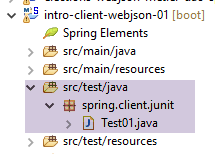 |
package spring.client.junit;
import java.util.ArrayList;
import java.util.List;
import java.util.Set;
import org.junit.Assert;
import org.junit.Before;
import org.junit.Test;
import org.junit.runner.RunWith;
import org.springframework.beans.BeansException;
import org.springframework.beans.factory.annotation.Autowired;
import org.springframework.beans.factory.annotation.Qualifier;
import org.springframework.boot.test.SpringApplicationConfiguration;
import org.springframework.test.context.junit4.SpringJUnit4ClassRunner;
import com.fasterxml.jackson.core.JsonProcessingException;
import com.fasterxml.jackson.databind.ObjectMapper;
import com.google.common.collect.Lists;
import spring.client.config.DaoConfig;
import spring.client.dao.DaoException;
import spring.client.dao.IDao;
import spring.client.entities.Categorie;
import spring.client.entities.Produit;
@SpringApplicationConfiguration(classes = DaoConfig.class)
@RunWith(SpringJUnit4ClassRunner.class)
public class Test01 {
// laag [DAO]
@Autowired
private IDao dao;
// filters jSON
@Autowired
@Qualifier("jsonMapper")
private ObjectMapper jsonMapper;
@Autowired
@Qualifier("jsonMapperCategorieWithProduits")
private ObjectMapper jsonMapperCategorieWithProduits;
@Autowired
@Qualifier("jsonMapperProduitWithCategorie")
private ObjectMapper jsonMapperProduitWithCategorie;
@Autowired
@Qualifier("jsonMapperCategorieWithoutProduits")
private ObjectMapper jsonMapperCategorieWithoutProduits;
@Autowired
@Qualifier("jsonMapperProduitWithoutCategorie")
private ObjectMapper jsonMapperProduitWithoutCategorie;
@Before
public void cleanAndFill() {
// de database wordt vóór elke test opgeschoond
log("Vidage de la base de données", 1);
// de tabel [CATEGORIES] wordt geleegd – als gevolg daarvan wordt de tabel [PRODUITS] ook geleegd
dao.deleteAllCategories();
// --------------------------------------------------------------------------------------
log("Remplissage de la base", 1);
// de tabellen worden gevuld
List<Categorie> categories = new ArrayList<Categorie>();
for (int i = 0; i < 2; i++) {
Categorie categorie = new Categorie(String.format("categorie%d", i));
for (int j = 0; j < 5; j++) {
categorie.addProduit(new Produit(String.format("produit%d%d", i, j), 100 * (1 + (double) (i * 10 + j) / 100),
String.format("desc%d%d", i, j)));
}
categories.add(categorie);
}
// de categorie toevoegen – hierdoor worden ook de producten ingevoerd
categories = dao.addCategories(categories);
}
@Test
public void showDataBase() throws BeansException, JsonProcessingException {
// lijst met categorieën
log("Liste des catégories", 2);
List<Categorie> categories = dao.getAllCategories();
affiche(categories, jsonMapperCategorieWithoutProduits);
// lijst met producten
log("Liste des produits", 2);
List<Produit> produits = dao.getAllProduits();
affiche(produits, jsonMapperProduitWithoutCategorie);
// enkele controles
Assert.assertEquals(2, categories.size());
Assert.assertEquals(10, produits.size());
Categorie categorie = findCategorieByName("categorie0", categories);
Assert.assertNotNull(categorie);
Produit produit = findProduitByName("produit03", produits);
Assert.assertNotNull(produit);
Long idCategorie = produit.getIdCategorie();
Assert.assertEquals(categorie.getId(), idCategorie);
}
@Test
public void getCategorieByNameWithProduits() {
log("getCategorieByNameWithProduits", 1);
Categorie categorie1 = dao.getCategorieByNameWithProduits("categorie1");
Assert.assertNotNull(categorie1);
Assert.assertEquals(5, categorie1.getProduits().size());
}
@Test
public void getCategorieByNameWithoutProduits() {
log("getCategorieByNameWithoutProduits", 1);
Categorie categorie1 = dao.getCategorieByNameWithoutProduits("categorie1");
Assert.assertNotNull(categorie1);
Assert.assertEquals("categorie1", categorie1.getNom());
}
@Test
public void getCategorieByIdWithProduits() {
log("getCategorieByIdWithProduits", 1);
Categorie categorie1 = dao.getCategorieByNameWithProduits("categorie1");
Categorie categorie2 = dao.getCategorieByIdWithProduits(categorie1.getId());
Assert.assertNotNull(categorie2);
Assert.assertEquals(categorie1.getId(), categorie2.getId());
Assert.assertEquals(categorie1.getNom(), categorie2.getNom());
}
@Test
public void getCategorieByIdWithoutProduits() {
log("getCategorieByIdWithoutProduits", 1);
Categorie categorie1 = dao.getCategorieByNameWithProduits("categorie1");
Categorie categorie2 = dao.getCategorieByIdWithoutProduits(categorie1.getId());
Assert.assertNotNull(categorie2);
Assert.assertEquals(categorie1.getNom(), categorie2.getNom());
}
@Test
public void getProduitByNameWithCategorie() {
log("getProduitByNameWithCategorie", 1);
Produit produit = dao.getProduitByNameWithCategorie("produit03");
Assert.assertNotNull(produit);
Assert.assertNotNull(produit.getCategorie());
}
@Test
public void getProduitByNameWithoutCategorie() {
log("getProduitByNameWithoutCategorie", 1);
Produit produit = dao.getProduitByNameWithoutCategorie("produit03");
Assert.assertNotNull(produit);
Assert.assertEquals("produit03", produit.getNom());
}
@Test
public void getProduitByIdWithCategorie() {
log("getProduitByNameWithCategorie", 1);
Produit produit = dao.getProduitByNameWithCategorie("produit03");
Produit produit2 = dao.getProduitByIdWithCategorie(produit.getId());
Assert.assertNotNull(produit2);
Assert.assertEquals(produit2.getNom(), produit.getNom());
Assert.assertEquals(produit2.getId(), produit.getId());
Assert.assertEquals(produit.getCategorie().getId(), produit2.getCategorie().getId());
}
@Test
public void getProduitByIdWithoutCategorie() {
log("getProduitByIdWithoutCategorie", 1);
Produit produit = dao.getProduitByNameWithCategorie("produit03");
Produit produit2 = dao.getProduitByIdWithoutCategorie(produit.getId());
Assert.assertNotNull(produit2);
Assert.assertEquals(produit2.getNom(), produit.getNom());
Assert.assertEquals(produit2.getId(), produit.getId());
}
@Test
public void doInsertsInTransaction() {
log("Ajout d'une catégorie [cat1] avec deux produits de même nom", 1);
// we voeren de invoeging uit
Categorie categorie = new Categorie("cat1");
categorie.addProduit(new Produit("x", 1.0, ""));
categorie.addProduit(new Produit("x", 1.0, ""));
// categorie toevoegen – de producten worden vervolgens automatisch ook toegevoegd
try {
categorie = dao.addCategories(Lists.newArrayList(categorie)).get(0);
} catch (DaoException e) {
show("Les erreurs suivantes se sont produites :", e.getErreurs());
}
// controles
List<Categorie> categories = dao.getAllCategories();
Assert.assertEquals(2, categories.size());
List<Produit> produits = dao.getAllProduits();
Assert.assertEquals(10, produits.size());
}
@Test
public void updateDataBase() {
log("Mise à jour du prix des produits de [categorie1]", 1);
Categorie categorie1 = dao.getCategorieByNameWithProduits("categorie1");
Categorie categorie1Saved = dao.getCategorieByNameWithProduits("categorie1");
Set<Produit> produits = categorie1.getProduits();
for (Produit produit : produits) {
produit.setPrix(1.1 * produit.getPrix());
}
List<Produit> produits2 = Lists.newArrayList(produits);
produits2 = dao.updateProduits(produits2);
// controles
List<Produit> produitsSaved = Lists.newArrayList(categorie1Saved.getProduits());
for (Produit produit2 : produits2) {
Produit produit = findProduitByName(produit2.getNom(), produitsSaved);
Assert.assertEquals(produit2.getPrix(), produit.getPrix() * 1.1, 1e-6);
}
}
@Test
public void addProduits() throws BeansException, JsonProcessingException {
log("Ajout de deux produits de catégorie [categorie0]", 1);
Categorie categorie0 = dao.getCategorieByNameWithoutProduits("categorie0");
Long idCategorie = categorie0.getId();
Produit p1 = new Produit("x", 1, "");
p1.setIdCategorie(idCategorie);
p1.setCategorie(categorie0);
Produit p2 = new Produit("y", 1, "");
p2.setIdCategorie(idCategorie);
p2.setCategorie(categorie0);
List<Produit> produits = new ArrayList<Produit>();
produits.add(p1);
produits.add(p2);
produits = dao.addProduits(produits);
// controle
affiche(produits, jsonMapperProduitWithoutCategorie);
}
// -------------- privé-methoden
private Produit findProduitByName(String nom, List<Produit> produits) {
for (Produit produit : produits) {
if (produit.getNom().equals(nom)) {
return produit;
}
}
return null;
}
private Categorie findCategorieByName(String nom, List<Categorie> categories) {
for (Categorie categorie : categories) {
if (categorie.getNom().equals(nom)) {
return categorie;
}
}
return null;
}
// weergave van een element van het type T
static private <T> void affiche(T element, ObjectMapper jsonMapper) throws JsonProcessingException {
System.out.println(jsonMapper.writeValueAsString(element));
}
// weergave van een lijst met elementen van het type T
static private <T> void affiche(List<T> elements, ObjectMapper jsonMapper) throws JsonProcessingException {
for (T element : elements) {
affiche(element, jsonMapper);
}
}
private static void log(String message, int mode) {
// bericht weergeven
String toPrint = null;
switch (mode) {
case 1:
toPrint = String.format("%s --------------------------------", message);
break;
case 2:
toPrint = String.format("-- %s", message);
break;
}
System.out.println(toPrint);
}
private static void show(String title, List<String> messages) {
// titel
System.out.println(String.format("%s : ", title));
// berichten
for (String message : messages) {
System.out.println(String.format("- %s", message));
}
}
}
De uitvoering is geslaagd en levert de volgende resultaten op de console op:
Vidage de la base de données --------------------------------
Remplissage de la base --------------------------------
Ajout de deux produits de catégorie [categorie0] --------------------------------
{"id":6285,"version":0,"nom":"x","idCategorie":1319,"prix":1.0,"description":""}
{"id":6286,"version":0,"nom":"y","idCategorie":1319,"prix":1.0,"description":""}
Vidage de la base de données --------------------------------
Remplissage de la base --------------------------------
Mise à jour du prix des produits de [categorie1] --------------------------------
Vidage de la base de données --------------------------------
Remplissage de la base --------------------------------
getCategorieByIdWithoutProduits --------------------------------
Vidage de la base de données --------------------------------
Remplissage de la base --------------------------------
getProduitByNameWithoutCategorie --------------------------------
Vidage de la base de données --------------------------------
Remplissage de la base --------------------------------
getCategorieByNameWithProduits --------------------------------
Vidage de la base de données --------------------------------
Remplissage de la base --------------------------------
getCategorieByNameWithoutProduits --------------------------------
Vidage de la base de données --------------------------------
Remplissage de la base --------------------------------
getProduitByNameWithCategorie --------------------------------
Vidage de la base de données --------------------------------
Remplissage de la base --------------------------------
getProduitByNameWithCategorie --------------------------------
Vidage de la base de données --------------------------------
Remplissage de la base --------------------------------
getProduitByIdWithoutCategorie --------------------------------
Vidage de la base de données --------------------------------
Remplissage de la base --------------------------------
-- Liste des catégories
{"id":1337,"version":0,"nom":"categorie0"}
{"id":1338,"version":0,"nom":"categorie1"}
-- Liste des produits
{"id":6367,"version":0,"nom":"produit00","idCategorie":1337,"prix":100.0,"description":"desc00"}
{"id":6368,"version":0,"nom":"produit01","idCategorie":1337,"prix":101.0,"description":"desc01"}
{"id":6369,"version":0,"nom":"produit02","idCategorie":1337,"prix":102.0,"description":"desc02"}
{"id":6370,"version":0,"nom":"produit03","idCategorie":1337,"prix":103.0,"description":"desc03"}
{"id":6371,"version":0,"nom":"produit04","idCategorie":1337,"prix":104.0,"description":"desc04"}
{"id":6372,"version":0,"nom":"produit10","idCategorie":1338,"prix":110.0,"description":"desc10"}
{"id":6373,"version":0,"nom":"produit11","idCategorie":1338,"prix":111.0,"description":"desc11"}
{"id":6374,"version":0,"nom":"produit12","idCategorie":1338,"prix":112.0,"description":"desc12"}
{"id":6375,"version":0,"nom":"produit13","idCategorie":1338,"prix":113.0,"description":"desc13"}
{"id":6376,"version":0,"nom":"produit14","idCategorie":1338,"prix":114.0,"description":"desc14"}
Vidage de la base de données --------------------------------
Remplissage de la base --------------------------------
getCategorieByIdWithProduits --------------------------------
Vidage de la base de données --------------------------------
Remplissage de la base --------------------------------
Ajout d'une catégorie [cat1] avec deux produits de même nom --------------------------------
Les erreurs suivantes se sont produites :
- org.hibernate.exception.ConstraintViolationException: could not execute statement
- could not execute statement
- Duplicate entry 'x' for key 'NOM'
11:24:37.650 [Thread-1] INFO o.s.c.a.AnnotationConfigApplicationContext - Closing org.springframework.context.annotation.AnnotationConfigApplicationContext@f8c1ddd: startup date [Fri Nov 20 11:24:34 CET 2015]; root of context hierarchy